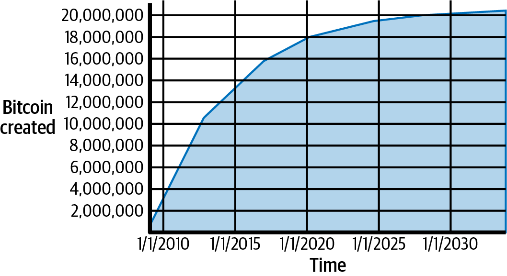
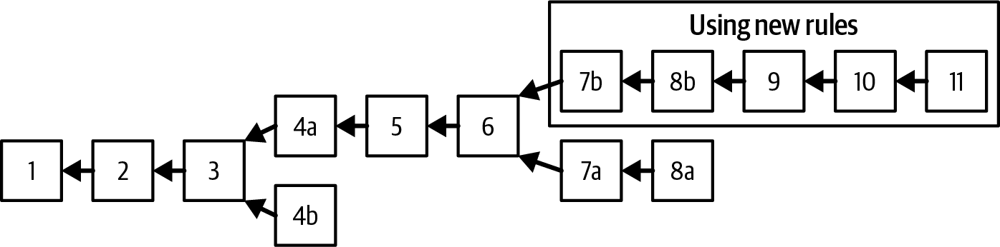
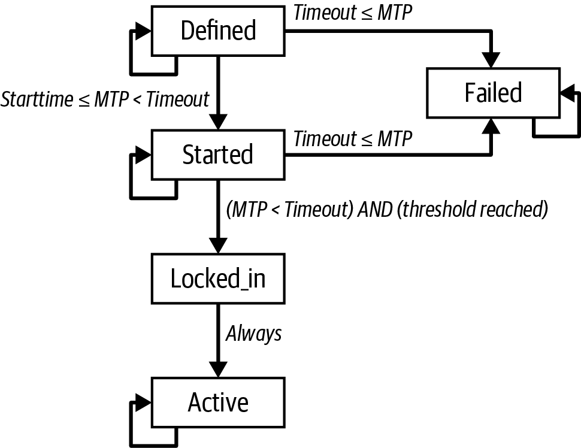

挖矿与共识
"挖矿"一词多少有些误导。它会让人联想到贵金属开采，从而把注意力聚焦在挖矿的奖励——每个区块中新产生的比特币——之上。尽管挖矿的确由这一奖励驱动，但它的首要目的并非奖励本身，也不是产出新的比特币。如果你只把挖矿视为比特币的产出过程，就把手段（激励）误认成了目的。挖矿是支撑去中心化清算系统的机制，通过它，交易得以被验证和清算。挖矿是使比特币与众不同的发明之一，是一种去中心化的共识机制，也是 P2P 数字现金的基础。
挖矿_保护比特币系统的安全_，并使全网范围的_无须中央权威的共识_得以涌现。新铸造的比特币和交易手续费构成的奖励机制，让矿工的行为与网络安全保持一致，同时也实现了货币供给。
|
挖矿是比特币_共识安全_得以_去中心化_的机制之一。 |
矿工在全局区块链上记录新的交易。一个包含自上一区块以来新出现交易的新区块，平均每 10 分钟被_挖出_一次，从而把这些交易追加到区块链上。被纳入区块并加入区块链的交易被视为_已确认_，比特币的新所有者由此知晓：保护他们在这些交易中所收到的比特币，已经付出了不可逆的工作量。
此外，区块链中的交易具有由其在链上的位置所定义的_拓扑顺序_。如果一笔交易出现在更早的区块中，或在同一区块中位置更靠前，则它在另一笔交易之前。在比特币协议中，一笔交易只有花费的是出现在更早位置的交易输出（无论是同一区块中更靠前，还是更早的区块），且这些输出未被任何此前的交易花费过，才是有效的。在单一区块链上，对拓扑顺序的强制实现保证了不可能存在两笔有效交易花费同一输出，从而消除了_双重花费_问题。
在某些构建于比特币之上的协议中，比特币交易的拓扑顺序也被用来确立事件先后顺序；我们将在 [single_use_seals] 中进一步讨论这一思路。
矿工为提供挖矿安全所获得的回报有两类：每个新区块中新创建的比特币（称为_补贴 subsidy_），以及包含在该区块中所有交易的手续费。为了赚取这份奖励，矿工竞相满足一个基于密码学哈希算法的挑战。这一问题的解，称为工作量证明（proof of work），被包含在新区块中，作为矿工付出了大量算力的证据。竞相求解工作量证明算法以赢得奖励、并获得将交易记入区块链的权利，正是比特币安全模型的基础。
比特币的货币供给以一种类似于中央银行通过印制钞票发行新货币的过程被创造出来。矿工可以加入一个区块中的新创比特币最大数量，大约每四年（精确为每 210,000 个区块）减少一次。它从 2009 年 1 月的每块 50 个比特币起步，2012 年 11 月减半至每块 25 个；2016 年 7 月再次减半为 12.5 个，2020 年 5 月再次减半为 6.25 个。按照此公式，挖矿奖励将呈指数级递减，直至大约 2140 年，届时全部比特币都将被发行完毕。2140 年之后，将不再发行新的比特币。
比特币矿工也从交易中获得手续费。每一笔交易都可以以输入与输出之间的比特币盈余的形式包含一笔手续费。赢得当前区块的矿工，可以把所获区块中所有交易的"找零"收入囊中。今天，手续费通常只占矿工收入的一小部分，绝大多数收入来自新铸造的比特币。然而，随着奖励随时间下降以及每区块的交易数量增长，挖矿收入中手续费的占比将越来越高。逐渐地，挖矿奖励将由交易手续费主导，构成矿工的主要激励。2140 年之后，每个区块中的新增比特币数量降为零，挖矿将仅由交易手续费来激励。
在本章中，我们将首先把挖矿作为一种货币供给机制来考察，然后再研究挖矿最重要的功能：支撑比特币安全的去中心化共识机制。
为了理解挖矿与共识，我们将跟踪 Alice 的交易，看它如何被 Jing 的挖矿设备接收并加入一个区块；然后跟随该区块被挖出、加入区块链，并通过涌现共识的过程被比特币网络所接受。
比特币经济学与货币创造
比特币在每个区块的产生过程中，以固定且递减的速率被铸造出来。每个区块平均每 10 分钟产出一次，内含全新的比特币，凭空创造。每 210,000 个区块，约每四年，货币发行速率减半。在网络运行的前四年，每个区块包含 50 个新比特币。
第一次减半发生在第 210,000 个区块。本书出版后预计的下一次减半将发生在第 840,000 个区块，大约在 2024 年 4 月或 5 月产出。新比特币的产生速率会在 32 次_减半（halvings）_之后呈指数级递减，直到第 6,720,000 个区块（约在 2137 年左右挖出）达到 1 satoshi 的最小货币单位。最终，在大约 6.93 百万个区块之后，约 2140 年，将累计发行近 2,099,999,997,690,000 satoshi，即近 2,100 万 BTC。此后，区块将不再包含新比特币，矿工将完全靠交易手续费获得回报。基于几何递减发行速率的比特币货币供给随时间的变化。 展示了随着货币发行量递减，流通中的比特币总量随时间的变化。

|
被挖出的比特币最大数量是比特币挖矿奖励的_上限_。实际中，矿工可以故意挖出一个低于完整奖励的区块。这类区块过去已有出现，未来也可能继续出现，从而导致总发行量低于上限。 |
在 计算将发行的比特币总量的脚本 的代码中，我们计算了将被发行的比特币总量。
# Original block reward for miners was 50 BTC
start_block_reward = 50
# 210000 is around every 4 years with a 10 minute block interval
reward_interval = 210000
def max_money():
# 50 BTC = 50 0000 0000 Satoshis
current_reward = 50 * 10**8
total = 0
while current_reward > 0:
total += reward_interval * current_reward
current_reward /= 2
return total
print("Total BTC to ever be created:", max_money(), "Satoshis")运行 max_money.py 脚本 展示了运行该脚本所产生的输出。
$ python max_money.py
Total BTC to ever be created: 2099999997690000 Satoshis有限且递减的发行机制造就了一种抵御通胀的固定货币供给。与可由中央银行无限印制的法定货币不同，没有任何个体能够膨胀比特币的供给。
去中心化共识
在上一章中，我们了解了区块链——所有交易的全局清单，比特币网络中的每一个人都将其作为所有权转移的权威记录而接受。
但是网络中的每个人，如何在不必信任任何人的前提下，对"谁拥有什么"这一普世"真理"达成一致呢？所有传统支付系统都依赖一种信任模型：由一个中心化机构提供清算服务，基本上由它来验证并清算所有交易。比特币没有中心化机构，但每个全节点都拥有一份可以信任的公共区块链完整副本，并将其视为权威记录。这条区块链不是由某个中心机构创建的，而是由网络中的每个节点独立组装出来的。在不安全的网络连接上传递的信息之上，网络中的每个节点都能得出相同的结论，并组装出与他人相同的区块链副本。本章将考察比特币网络如何在没有中心权威的情况下达成全局共识的过程。
Satoshi Nakamoto 的发明之一，就是用于实现 涌现共识（emergent consensus） 的去中心化机制。之所以称之为"涌现"，是因为共识并非通过显式手段达成——没有选举，也没有某个固定时刻"共识发生了"。相反，共识是数以千计的独立节点在遵循简单规则的异步交互过程中所涌现出来的产物。比特币的所有属性——货币、交易、支付，以及不依赖中心权威或信任的安全模型——都源自这一发明。
比特币的去中心化共识源自四个在网络各节点上独立运行的过程之间的相互作用：
-
每个全节点根据一份详尽的标准清单，对每笔交易进行独立验证
-
矿工节点将这些交易独立地聚合进新区块，并通过 PoW 算法完成对算力消耗的证明
-
每个节点对新区块进行独立验证，并将其组装进链中
-
每个节点独立地选择拥有最多 PoW 累计算力的那条链
接下来几节将考察这些过程，以及它们如何相互作用，形成网络范围内共识这一涌现属性，使任何比特币节点都能组装出自己的那份权威、可信、公开、全局的区块链副本。
交易的独立验证
在 [c_transactions] 中，我们看到钱包软件如何通过收集 UTXO、提供合适的认证数据并构造分配给新所有者的新输出，来创建交易。生成的交易随后被发送给比特币网络中的相邻节点，以便在整个比特币网络中传播。
然而，在把交易转发给邻居之前，每个收到该交易的比特币节点都会先对其进行验证。这样可以确保只有有效的交易才会在网络中传播，而无效交易会在第一个遇到它的节点处被丢弃。
每个节点都会按一份长长的标准清单来验证每一笔交易：
-
交易的语法和数据结构必须正确。
-
输入列表和输出列表都不能为空。
-
交易的权重必须足够小，能够装进一个区块。
-
每个输出值以及它们的总和，必须落在允许的取值范围内（不小于零，且不超过 2100 万枚比特币）。
-
锁定时间必须等于 INT_MAX；或者锁定时间和序列号取值满足锁定时间规则与 BIP68 规则。
-
交易中包含的签名操作数（SIGOPS）必须小于签名操作上限。
-
被花费的输出必须匹配 mempool 中的输出，或者主链某个区块中的未花费输出。
-
对每个输入，如果其引用的输出交易是一个 coinbase 输出，那么它必须至少有 COINBASE_MATURITY（100）个确认。任何绝对或相对的锁定时间也必须被满足。节点可以在 coinbase 成熟前一个区块就转发花费它的交易，因为只要包含在下一个区块中，就会成熟。
-
若输入值之和小于输出值之和，则拒绝。
-
每个输入的脚本必须能够与对应的输出脚本验证通过。
注意这些条件会随时间变化，以增加新特性或应对新型拒绝服务攻击。
通过在接收每笔交易并对外传播之前对其进行独立验证，每个节点都构建出一池有效（但未确认）的交易，称为 内存池（memory pool） 或 mempool。
矿工节点
比特币网络上的一些节点是专门的节点，称为 矿工。Jing 就是一名比特币矿工；他通过运行"矿机"——一种为挖比特币而设计的专用计算机硬件系统——来赚取比特币。Jing 的专用挖矿硬件连接到一台运行全节点的服务器上。和其他所有全节点一样，Jing 的节点也在比特币网络上接收并传播未确认的交易；不过，Jing 的节点还会把这些交易聚合成新区块。
让我们跟踪在 Alice 向 Bob 进行一笔购买（见 [spending_bitcoin]）那段时间里所创建的区块。为了演示本章中的概念，我们假设包含 Alice 这笔交易的区块由 Jing 的挖矿系统挖出，并跟随 Alice 的交易，看它如何成为这一新区块的一部分。
Jing 的矿工节点维护一份本地的区块链副本。在 Alice 进行购买时，Jing 的节点已经同步到 PoW 累计算力最多的那条区块链。Jing 的节点一边监听交易、尝试挖出新区块，一边监听其他节点发现的区块。在 Jing 的节点挖矿的过程中，它通过比特币网络收到一个新区块。这个区块的到来标志着对该区块的搜索结束，以及对下一个区块的搜索开始。
在前几分钟里，Jing 的节点一边为前一个区块寻找解，一边也在为下一个区块收集交易。到此时为止，它已经在内存池中收集了几千笔交易。在收到新区块并对其进行验证之后，Jing 的节点还会将这个区块与内存池中的所有交易进行比对，并移除任何已包含在该区块中的交易。仍留在内存池中的交易都是未确认的，等待被记录进新的区块。
Jing 的节点立即构造一个新的半成品区块，作为下一个区块的候选。这个区块被称为 候选区块（candidate block），因为它还不是一个有效区块——它不包含有效的 PoW。只有当矿工成功按 PoW 算法找到一个解时，这个区块才会成为有效区块。
当 Jing 的节点把内存池中的所有交易聚合起来时，新的候选区块包含几千笔交易，每一笔都支付了交易手续费——他将尝试把这些手续费收入囊中。
Coinbase 交易
任何区块中的第一笔交易都是一笔特殊交易，称为 coinbase 交易。这笔交易由 Jing 的节点构造，用来支付他因挖矿付出的 奖励（reward）。
Jing 的节点把 coinbase 交易构造为一笔支付到自己钱包的交易。Jing 因挖出一个区块所获得的奖励总额，等于区块补贴（2023 年为 6.25 个新发行的比特币）与该区块中所有交易的手续费之和。
不同于普通交易，coinbase 交易不消耗（花费）UTXO 作为输入。相反，它只有一个输入，称为 coinbase 输入，其中隐含着区块奖励。coinbase 交易必须至少有一个输出，可以拥有任意多个能装进区块的输出。2023 年，coinbase 交易通常有两个输出：其中一个是零值输出，使用 OP_RETURN 来承诺该区块中所有 segregated witness（segwit）交易的见证数据；另一个输出则把奖励支付给矿工。
coinbase 奖励与手续费
为了构造 coinbase 交易，Jing 的节点首先计算交易手续费总额：
接下来，Jing 的节点为这个新区块计算正确的奖励。奖励根据 区块高度计算，从每个区块 50 bitcoin 开始，每 210,000 个区块减半一次。
具体计算可以在 Bitcoin Core 客户端的 GetBlockSubsidy 函数中 看到，如 计算区块奖励——Bitcoin Core 客户端 main.cpp 中的函数 GetBlockSubsidy 所示。
CAmount GetBlockSubsidy(int nHeight, const Consensus::Params& consensusParams)
{
int halvings = nHeight / consensusParams.nSubsidyHalvingInterval;
// Force block reward to zero when right shift is undefined.
if (halvings >= 64)
return 0;
CAmount nSubsidy = 50 * COIN;
// Subsidy is cut in half every 210,000 blocks.
nSubsidy >>= halvings;
return nSubsidy;
}初始补贴以 satoshi 为单位，用 50 乘以 COIN 常量（100,000,000 satoshi） 计算而得。这将初始奖励（nSubsidy）设为 50 亿 satoshi。
接下来，函数通过将当前区块高度除以减半间隔 （SubsidyHalvingInterval），来计算已经发生过的 halvings 次数。
接下来，函数使用二进制右移运算符，把奖励 （nSubsidy） 每经过一次减半就除以二。对于区块 277,316，这会把 50 亿 satoshi 的奖励 做一次二进制右移（一次减半），结果为 25 亿 satoshi，也就是 25 bitcoin。在第 33 次减半之后，补贴将被向下取整为零。之所以使用 二进制右移运算符，是因为它比反复做除法更高效。为了避免潜在 bug，在 63 次减半之后跳过移位操作，并把补贴直接设为 0。
最后，将 coinbase 奖励（nSubsidy）加上交易手续费（nFees）， 并返回二者之和。
|
如果是 Jing 的挖矿节点来编写 coinbase 交易，那么是什么阻止 Jing "奖励"自己 100 或 1,000 bitcoin 呢？答案是，过度膨胀的奖励会让 其他所有人都把这个区块视为无效，从而浪费 Jing 为 PoW 所消耗的 电力。只有当区块被所有人接受时，Jing 才能花掉这份奖励。 |
coinbase 交易的结构
完成上述计算之后， Jing 的节点接着构造 coinbase 交易，把区块奖励 支付给自己。
coinbase 交易 有一种特殊的格式。它不像普通交易那样用交易输入指明要 花费的前序 UTXO，而是有一个 "coinbase" 输入。我们在 [inputs] 中已经讨论过交易输入。让我们把普通交易输入与 coinbase 交易 输入做一下对比。[table_8-1] 展示了一笔普通交易的结构， 而 [table_8-2] 则展示了 coinbase 交易输入的结构。
| 大小 | 字段 | 说明 |
|---|---|---|
32 字节 |
Transaction Hash |
指向包含待花费 UTXO 的那笔交易 |
4 字节 |
Output Index |
待花费 UTXO 的索引号，第一个为 0 |
1–9 字节（compactSize） |
Script Size |
后续脚本的长度，以字节为单位 |
可变 |
Input Script |
满足 UTXO 输出脚本条件的脚本 |
4 字节 |
Sequence Number |
多用途字段，用于 BIP68 时间锁与交易替换信号 |
| 大小 | 字段 | 说明 |
|---|---|---|
32 字节 |
Transaction Hash |
所有位均为零：不是对交易哈希的引用 |
4 字节 |
Output Index |
所有位均为一：0xFFFFFFFF |
1 字节 |
Coinbase Data Size |
coinbase 数据的长度，2 到 100 字节之间 |
可变 |
Coinbase Data |
任意数据，用于额外 nonce 和挖矿标记；在 v2 区块中，必须以区块高度开头 |
4 字节 |
Sequence Number |
设为 0xFFFFFFFF |
在 coinbase 交易中，前两个字段被设置为并不代表 UTXO 引用的值。 "transaction hash" 字段被填入 32 字节的全零，而 "output index" 字段被填入 4 字节的全 0xFF（十进制 255）。 输入脚本被 coinbase 数据所取代，这是一个供矿工 使用的数据字段，下面我们就会看到。
coinbase 数据
coinbase 交易 没有输入脚本字段。取而代之的是 coinbase 数据，长度必须在 2 到 100 字节之间。除最前面的几个字节之外，coinbase 数据的其余部分 可以由矿工任意使用；这是一段任意数据。
例如，在创世区块中， Satoshi Nakamoto 在 coinbase 数据中加入了文本 "The Times 03/Jan/2009 Chancellor on brink of second bailout for banks"， 以此证明该区块的最早可能创建日期，同时传达一段信息。如今， 矿工经常用 coinbase 数据存放额外的 nonce 值以及标识 矿池身份的字符串。
coinbase 数据最前面的几个字节过去是任意的，但现在不再如此。 按照 BIP34 的规定，version-2 区块（version 字段为 2 或更高的区块） 必须在 coinbase 字段开头，以脚本 "push" 操作的形式 包含区块高度。
构造区块头
为了构造区块头，挖矿节点需要填写六个字段，如 [block_header_structure_ch10] 所列。
| 大小 | 字段 | 描述 |
|---|---|---|
4 字节 |
Version |
一个多用途的位字段 |
32 字节 |
Previous Block Hash |
对链中前一个（父）区块哈希的引用 |
32 字节 |
Merkle Root |
本区块交易所构成 Merkle tree 根的哈希 |
4 字节 |
Timestamp |
本区块的大致创建时间（自 Unix 纪元起的秒数） |
4 字节 |
Target |
本区块的 PoW 算法目标值 |
4 字节 |
Nonce |
用于 PoW 算法的计数器 |
version 字段最初是一个整数字段，并曾在比特币网络的三次升级中被使用，即 BIP34、BIP66 和 BIP65 所定义的升级。每次升级时，版本号都会递增。后来的升级把 version 字段重新定义为一个位字段，称为 versionbits，允许最多 29 个升级同时进行；详见 BIP9：信号化与激活。再后来，矿工开始把部分 versionbits 用作辅助 nonce 字段。
|
BIP34、BIP66 和 BIP65 所定义的协议升级实际上是按这个顺序发生的，BIP66（严格 DER）早于 BIP65（OP_CHECKTIMELOCKVERIFY），因此比特币开发者通常按这个顺序列出它们，而不是按编号排序。 |
如今，除非正在进行某次共识协议升级尝试，否则 versionbits 字段没有意义；如果正在进行升级，你需要阅读其相关文档，以确定它是如何使用 versionbits 的。
接下来，挖矿节点需要填入 "Previous Block Hash"（也叫做 prevhash）。它是从网络上接收到的前一个区块的区块头哈希，Jing 的节点已经接受了它，并选择它作为自己候选区块的 父 区块。
|
通过选择候选区块头中 Previous Block Hash 字段所指向的特定 父 区块，Jing 就把他的算力投入到延伸以该特定区块结尾的那条链上。 |
下一步是用 Merkle tree 对所有交易进行承诺。每笔交易按拓扑顺序用其见证交易标识符（wtxid）列出，其中第一笔交易（coinbase）的 wtxid 用 32 个 0x00 字节代替。正如我们在 [merkle_trees] 中所看到的，如果 wtxid 数量为奇数，最后一个 wtxid 会与自身进行哈希，从而生成每个节点都包含一笔交易哈希的叶子节点。然后这些交易哈希两两组合，构建出树的每一层，直到所有交易被汇总为一个位于树 "根" 的节点。Merkle tree 的根把所有交易汇总成一个 32 字节的值，即 witness root hash。
witness root hash 会被添加到 coinbase 交易的一个输出中。如果区块中没有任何交易需要包含 witness 结构，则可以跳过这一步。然后每笔交易（包括 coinbase 交易）都用其交易标识符（txid）列出，并用于构建第二棵 Merkle tree，其根成为区块头所承诺的 merkle root。
接下来，Jing 的挖矿节点会添加一个 4 字节的时间戳，编码为 Unix "纪元" 时间戳，即从 1970 年 1 月 1 日午夜 UTC/GMT 起经过的秒数。
随后，Jing 的节点填入 nBits 目标值，它必须被设置为本区块所需 PoW 的紧凑表示，从而使该区块成为有效区块。target 在区块中以 "target bits" 度量值存储，这是一种 target 的尾数—指数编码。该编码包含 1 字节的指数，后接 3 字节的尾数（系数）。例如，在第 277,316 号区块中，target bits 值为 0x1903a30c。第一部分 0x19 是十六进制的指数，紧接着的 0x03a30c 是系数。target 的概念在 通过重定目标调整难度 中解释，而 "target bits" 表示则在 Target 表示 中解释。
最后一个字段是 nonce，初始化为零。
填好所有其他字段后，候选区块的区块头就完成了，挖矿过程可以开始了。现在的目标是找到一个区块头，使其哈希值小于 target。挖矿节点需要测试数十亿乃至数万亿种区块头变体，才能找到一个满足 要求的版本。
挖矿区块
现在，Jing 的节点已经构造好了一个候选区块，接下来该由 Jing 的硬件矿机来 "挖" 这个区块，找到 PoW 算法的解，使该区块有效。在本书中，我们已经研究过各种场景下用于比特币系统的密码学哈希函数。SHA256 这个哈希函数就是比特币挖矿过程中所使用的函数。
用最简单的话说，挖矿就是反复对候选区块头进行哈希，每次改变其中一个参数，直到所得到的哈希与某个特定的 target 相匹配。哈希函数的结果无法预先确定，也无法构造出某种模式来生成特定的哈希值。哈希函数的这种特性意味着，要得到与特定 target 匹配的哈希结果，唯一的办法就是一次又一次地尝试，不断修改输入，直到偶然出现期望的哈希结果。
PoW 算法
哈希算法接受任意长度的数据输入，并产生一个固定长度的确定性结果，称为 摘要（digest）。摘要是对输入的数字承诺。对于任何特定输入，所产生的摘要总是相同的，并且任何实现相同哈希算法的人都可以轻松地计算和验证。密码学哈希算法的一个关键特性是：在计算上不可能找到两个产生相同摘要的不同输入（这种情况称为 碰撞（collision））。作为推论，除了尝试随机输入以外，几乎不可能选择一个输入使其产生一个期望的摘要。
使用 SHA256 时，无论输入大小如何，输出始终为 256 位长。例如，我们将计算短语 "Hello, World!" 的 SHA256 哈希：
$ echo "Hello, world!" | sha256sum d9014c4624844aa5bac314773d6b689ad467fa4e1d1a50a1b8a99d5a95f72ff5 -
这个 256 位的输出（以十六进制表示）就是该短语的 哈希 或 摘要，它取决于该短语的每一部分。增加一个字母、标点符号或任何其他字符都将产生不同的哈希。
在这种场景中使用的变量称为 nonce。nonce 用于改变密码学函数的输出，在本例中是改变对该短语的 SHA256 承诺的输出。
为了把这个算法变成一个挑战，我们设定一个目标：找到一个短语，使其产生的十六进制哈希以零开头。幸运的是，这并不困难，如 一个简单的 PoW 实现 所示。
$ for nonce in $( seq 100 ) ; do echo "Hello, world! $nonce" | sha256sum ; done 3194835d60e85bf7f728f3e3f4e4e1f5c752398cbcc5c45e048e4dbcae6be782 - bfa474bbe2d9626f578d7d8c3acc1b604ec4a7052b188453565a3c77df41b79e - [...] f75a100821c34c84395403afd1a8135f685ca69ccf4168e61a90e50f47552f61 - 09cb91f8250df04a3db8bd98f47c7cecb712c99835f4123e8ea51460ccbec314 -
短语 "Hello, World! 32" 产生以下哈希，它符合我们的条件： 09cb91f8250df04a3db8bd98f47c7cecb712c99835f4123e8ea51460ccbec314。共花费了 32 次尝试才找到它。从概率角度来看，如果哈希函数的输出是均匀分布的，我们预期每 16 次哈希就会找到一个以 0 为十六进制前缀的结果（十六进制 0 到 F 共 16 个数字中的一个）。用数值来表示，这意味着找到一个数值小于 0x1000000000000000000000000000000000000000000000000000000000000000 的哈希值。我们将这个阈值称为 target，目标就是找到一个数值小于该 target 的哈希。如果我们降低 target，找到一个小于该 target 的哈希这一任务就会变得越来越困难。
打个简单的比方，想象一个游戏，玩家反复掷一对骰子，试图掷出小于指定目标的点数。在第一轮中，目标是 12。除非你掷出双 6，否则你就赢了。下一轮目标是 11。玩家必须掷出 10 或更小才能获胜，仍然是一项简单的任务。假设几轮之后，目标降到 5。现在，超过一半的掷骰结果会超过目标，因而无效。目标越低，获胜需要的掷骰次数就越多。最终，当目标为 3（最小可能值）时，每 36 次掷骰中只有一次（约 3%）会产生获胜结果。
从一位知道掷骰游戏目标为 3 的观察者的角度来看，如果某人成功掷出了获胜结果，可以推测他们平均尝试了 36 次。换句话说，可以根据目标所施加的难度，估算出成功所需的工作量。当算法基于像 SHA256 这样的确定性函数时，输入本身就构成了 证明（proof），证明为了产生低于 target 的结果而完成了一定数量的 工作（work）。因此，称为 proof of work。
|
尽管每次尝试都会产生一个随机结果，但任何可能结果的概率都可以预先计算。因此，特定难度的结果就构成了对特定工作量的证明。 |
在 一个简单的 PoW 实现 中，获胜的 "nonce" 是 32，并且任何人都可以独立确认这个结果。任何人都可以把数字 32 作为后缀加到短语 "Hello, world!" 后面并计算其哈希，验证它小于 target：
$ echo "Hello, world! 32" | sha256sum 09cb91f8250df04a3db8bd98f47c7cecb712c99835f4123e8ea51460ccbec314 -
尽管只需一次哈希计算就能验证，但我们花了 32 次哈希计算才找到一个可用的 nonce。如果我们有一个更低的 target（更高的难度），就需要多得多的哈希计算来找到一个合适的 nonce，但任何人验证仍只需要一次哈希计算。并且通过知道 target，任何人都可以使用统计方法估算难度，从而大致知道找到这样一个 nonce 所需要的工作量。
|
PoW 必须产生一个 小于 target 的哈希。更高的 target 意味着找到一个低于 target 的哈希更不困难。更低的 target 意味着找到一个低于 target 的哈希更加困难。target 与难度成反比关系。 |
比特币的 PoW 与 #sha256_example_generator_output2 中展示的挑战非常相似。矿工构造一个填满交易的候选区块。接下来，矿工计算该区块头的哈希，并查看其是否小于当前的 target。如果该哈希不小于 target，矿工就会修改 nonce（通常只是将其加一），然后再试一次。在比特币网络当前的难度下，矿工必须尝试巨量次数，才能找到一个使区块头哈希足够低的 nonce。
Target 表示
区块头中以一种称为 "target bits" 或简称 "bits" 的记法包含 target，在区块 277,316 中其值为 0x1903a30c。这种记法以系数/指数格式表达 PoW target，前两个十六进制数字表示指数，接下来的六位十六进制数字表示系数。因此，在这个区块中，指数为 0x19，系数为 0x03a30c。
从这种表示计算难度 target 的公式是：
- target = coefficient × 2(8 × (exponent – 3))
使用该公式，以及难度 bits 值 0x1903a30c，我们得到：
- target = 0x03a30c × 20x08 × (0x19 – 0x03)
即：
- 22,829,202,948,393,929,850,749,706,076,701,368,331,072,452,018,388,575,715,328
或者，以十六进制表示：
- 0x0000000000000003A30C00000000000000000000000000000000000000000000
这意味着，高度 277,316 处的有效区块必须具有一个小于该 target 的区块头哈希。以二进制表示，该数必须有超过 60 个前导位被置为零。在这个难度水平下，一个每秒处理 1 万亿次哈希（每秒 1 太哈希，即 1 TH/sec）的单个矿工，平均只能每 8,496 个区块或每 59 天找到一个解。
通过重定目标调整难度
正如我们所看到的，target 决定了难度，因此影响找到 PoW 算法解所需的时间。这就引出了几个显而易见的问题：为什么难度可调？由谁来调？怎么调？
比特币的区块平均每 10 分钟生成一个。这是比特币的心跳，是货币发行频率和交易结算速度的基础。它不仅要在短期内保持恒定，更要在数十年的跨度上保持恒定。在这段时间内，可以预期计算能力将持续以飞快的速度增长。此外，参与挖矿的人数及其使用的计算机也会不断变化。为了让区块的生成时间维持在 10 分钟，挖矿难度必须做出调整以应对这些变化。事实上，PoW target 是一个动态参数，会被周期性地调整以达成 10 分钟的出块间隔目标。简言之，target 被设定为：在当前的算力下，恰好产生 10 分钟的出块间隔。
那么，在一个完全去中心化的网络中，这种调整是如何实现的呢？重定目标（retargeting）会在每个节点上自动且独立地进行。每 2,016 个区块，所有节点都会对 PoW 进行一次重定目标。计算实际耗时与期望耗时（每个区块 10 分钟）之间的比值，然后对 target 做出对应比例（上调或下调）的调整。简言之：如果网络出块比每 10 分钟更快，难度就会上升（target 下降）；如果出块比预期更慢，难度就会下降（target 上升）。
该等式可以概括为：
New Target = Old Target * (20,160 minutes / Actual Time of Last 2015 Blocks)
|
虽然 target 的校准每 2,016 个区块进行一次，但由于早期比特币软件中的一个 off-by-one 错误，它是基于前 2,015 个区块（而非本应的 2,016 个）的总时长来计算的，导致重定目标存在偏向更高难度 0.05% 的偏差。 |
重定 PoW：pow.cpp 中的 CalculateNextWorkRequired() 展示了 Bitcoin Core 客户端中使用的代码。
// Limit adjustment step
int64_t nActualTimespan = pindexLast->GetBlockTime() - nFirstBlockTime;
LogPrintf(" nActualTimespan = %d before bounds\n", nActualTimespan);
if (nActualTimespan < params.nPowTargetTimespan/4)
nActualTimespan = params.nPowTargetTimespan/4;
if (nActualTimespan > params.nPowTargetTimespan*4)
nActualTimespan = params.nPowTargetTimespan*4;
// Retarget
const arith_uint256 bnPowLimit = UintToArith256(params.powLimit);
arith_uint256 bnNew;
arith_uint256 bnOld;
bnNew.SetCompact(pindexLast->nBits);
bnOld = bnNew;
bnNew *= nActualTimespan;
bnNew /= params.nPowTargetTimespan;
if (bnNew > bnPowLimit)
bnNew = bnPowLimit;参数 Interval（2,016 个区块）与 TargetTimespan（两周，即 1,209,600 秒）定义在 chainparams.cpp 中。
为了避免难度出现极端波动，每个周期的重定目标调整幅度不得超过 4 倍。如果所需调整大于 4 倍，则只调整 4 倍，不再多调。任何进一步的调整都会在下一个重定目标周期完成，因为这种失衡会延续到接下来的 2,016 个区块。因此，算力与难度之间的较大失衡可能需要数个 2,016 区块周期才能平衡。
注意，target 与交易数量或交易价值无关。这意味着用于保护比特币安全的算力——以及由此消耗的电力——也完全独立于交易数量。比特币可以在不增加当前算力水平的前提下扩容并保持安全。算力的增加体现的是新矿工进入市场所带来的市场力量。只要有足够的算力掌握在为了奖励而诚实行动的矿工手中，就足以阻止"接管"型攻击，因此也就足以保障比特币的安全。
挖矿难度与电费成本以及比特币相对于支付电费所用货币的汇率紧密相关。高性能挖矿系统在当前一代硅工艺下已经差不多达到了效率极限，以尽可能高的速率将电力转化为哈希计算。挖矿市场的主要影响因素是以比特币计价的每千瓦时电价，因为它决定了挖矿的盈利能力，进而决定了进入或退出挖矿市场的激励。
过去中位时间（MTP）
在比特币中，挂钟时间（wall time）与共识时间（consensus time）之间存在着细微但非常重要的区别。比特币是一个去中心化网络，这意味着每个参与者都有自己对时间的视角。网络上的事件并不会在所有地方同时发生。网络延迟必须被纳入每个节点的视角。最终所有内容会同步起来，形成一条共同的区块链。比特币每 10 分钟就 过去 某一时刻区块链的状态达成一次共识。
区块头中设置的时间戳由矿工设定。共识规则给出了一定的容差，以应对去中心化节点之间时钟精度的差异。然而，这造成了一个糟糕的激励：矿工有动机在区块中谎报时间。例如，如果矿工把自己的时间设置在未来，他们就可以降低难度，从而挖出更多区块，并占有原本为未来矿工保留的部分区块补贴。如果他们能将某些区块的时间设在过去，对另一些区块使用当前时间，就同样能让区块之间看起来间隔很长，从而操纵难度。
为了阻止这种操纵，比特币有两条共识规则。第一条是：任何节点都不会接受时间比当前向未来超出两小时以上的区块。第二条是：任何节点都不会接受时间小于或等于最近 11 个区块的中位时间的区块，这个中位时间被称为 median time past（MTP）。
随着 BIP68 相对时间锁的激活，交易中（绝对与相对）时间锁的"时间"计算方式也发生了变化。此前，矿工可以将任意时间锁小于等于区块时间的交易打包进区块。这激励矿工使用他们认为可能的最新时间（接近未来两小时），以便让更多交易满足打包条件。
为了消除这种说谎的激励，并加强时间锁的安全性，BIP113 被提出，并与相对时间锁相关的 BIP 同时激活。MTP 成为所有时间锁计算所使用的共识时间。通过取大约两小时前那段窗口的中点，单个区块时间戳的影响被削弱。通过纳入 11 个区块，任何单个矿工都无法通过操纵时间戳，从尚未成熟的时间锁交易中获取手续费。
MTP 改变了 lock time、CLTV、sequence 和 CSV 的时间计算实现。由 MTP 计算出的共识时间通常比挂钟时间晚约一小时。如果你创建带时间锁的交易，在估算要编码到 lock time、sequence、CLTV 和 CSV 中的目标值时应将其纳入考虑。
成功挖到区块
正如我们之前看到的，Jing 的节点已经构建了一个候选区块并准备好用于挖矿。Jing 有若干配备 ASIC 的硬件矿机，其中数十万颗集成电路以惊人的速度并行运行比特币的双 SHA256 算法。这些专用机器中的许多通过 USB 或局域网连接到他的挖矿节点。接着，运行在 Jing 桌面机上的挖矿节点将区块头传送给他的挖矿硬件，硬件每秒开始测试万亿次的区块头变体。由于 nonce 只有 32 位，在穷举所有 nonce 可能值（约 40 亿）之后，挖矿硬件会改动区块头（调整 coinbase extra nonce 空间、版本位 version bits 或时间戳），并重置 nonce 计数器，去测试新的组合。
在开始挖某个特定区块的近 11 分钟之后，其中一台硬件矿机找到了一个解，并将其发送回挖矿节点。
Jing 的挖矿节点立即把这个区块发给它的所有对等节点。它们接收、校验，然后传播这个新区块。随着区块在网络中扩散开来，每个节点都会把它加入到自己那份区块链副本中，使区块链延长到一个新的高度。挖矿节点在接收并校验该区块后，便会放弃寻找同一高度区块的努力，立刻开始计算链上的下一个区块，并以 Jing 的区块作为"父区块"。通过在 Jing 新发现的区块之上继续构建，其他矿工实际上是在用他们的算力为 Jing 的区块以及它所延伸的那条 链背书。
在下一节中，我们将看看每个节点用于校验区块和选择最大工作量链的流程，正是这一过程创造出了构成去中心化区块链的共识。
校验新区块
比特币共识机制的第三步，是网络上每个节点对每个新区块的独立校验。当新解出的区块在网络中传播时，每个节点都会对其执行一系列测试以进行校验。 这种独立校验同时确保只有遵循共识规则的区块才能被纳入区块链，从而让其矿工赚得奖励。违反规则的区块会被拒绝，不仅让其矿工失去奖励，还白白浪费了为寻找 PoW 解所付出的努力，导致这些矿工承担了创建区块的全部成本却得不到任何回报。
当节点收到一个新区块时，会依据一长串必须全部满足的判据对其进行校验，否则该区块就会被拒绝。这些判据可以在 Bitcoin Core 客户端的 CheckBlock 与 CheckBlockHeader 函数中找到，包括：
-
区块数据结构在语法上有效。
-
区块头哈希小于 target（强制执行 PoW）。
-
区块时间戳处于 MTP 与未来两小时之间（允许时间误差）。
-
区块权重在可接受的范围内。
-
第一笔交易（且只有第一笔）是 coinbase 交易。
-
区块内的所有交易都通过 交易的独立验证 中讨论的交易检查清单验证有效。
网络上每个节点对每个新区块的独立校验，确保矿工无法作弊。在前面几节里我们看到矿工可以写一笔交易，把区块中新生成的比特币奖励给自己，并领取交易手续费。那为什么矿工不给自己写一笔一千个比特币的交易，而要按照正确的奖励来写呢？因为每个节点都按相同的规则来校验区块。一个无效的 coinbase 交易会让整个区块都无效，从而导致该区块被拒绝，因此那笔交易也永远不会成为区块链的一部分。 矿工必须按照所有节点共同遵循的规则来构造区块，并以正确的 PoW 解去挖出它。为此，他们要在挖矿上消耗大量电力，一旦作弊，所有的电力和努力都将付诸东流。这就是为什么独立校验是去中心化共识的关键组成部分。
组装区块链并选择最优链
比特币去中心化共识机制的最后一步，是把区块组装成链，并选择拥有最多 PoW 的那条链。
最优区块链 是任何累积 PoW 最多的有效区块链。 最优链还可能存在一些分支，其上的区块是最优链上某些区块的"兄弟"。这些区块是有效的，但不在最优链上。它们会被保留以备将来参考，以防其中某条次链日后变成主链。出现兄弟区块时，通常是因为不同的区块在相同高度上几乎同时被挖出。
当收到一个新区块时，节点会尝试把它接入现有的区块链。节点会查看该区块的 "previous block hash" 字段，也就是对其父区块的引用，然后尝试在现有区块链中找到那个父区块。大多数情况下，父区块就是最优链的"链尖"，意味着这个新区块在扩展最优链。
有时新区块并未扩展最优链。这种情况下，节点会把新区块的区块头挂到一条次链上，然后比较该次链与之前最优链的工作量。如果该次链此刻成了最优链，节点就会相应地 重组 它对已确认交易和可用 UTXO 的视图。如果该节点是矿工，它现在就会构造一个候选区块，去扩展这条新的、拥有更多 PoW 的链。
通过选择累积工作量最大的有效链，所有节点最终都会达成全网共识。链与链之间的暂时分歧会在更多工作被添加进来、其中一条可能的链得到扩展时被最终解决。
|
本节描述的区块链分叉，是全球网络中传输延迟的自然结果。本章稍后还会讨论刻意引发的分叉。 |
分叉几乎总会在一个区块内被解决。 如果两个区块由处于上一次分叉"两侧"的矿工几乎同时挖出，意外分叉有可能延伸到两个区块。不过出现这种情况的概率很低。
比特币 10 分钟的出块间隔是在快速确认时间与分叉概率之间的设计折中。更快的出块时间会让交易看起来清算得更快，但会导致更频繁的区块链分叉；更慢的出块时间会减少分叉数量，但会让结算看起来更慢。
|
哪一种更安全：一笔交易被打包进一个区块，平均出块时间为 10 分钟；还是一笔交易被打包进一个区块，其上叠加了 9 个区块，平均出块时间为 1 分钟？答案是它们同等安全。一个想要双花该交易的恶意矿工，需要做相当于全网算力 10 分钟的工作量，才能造出一条具有同等 PoW 的链。 更短的出块间隔并不会带来更早的结算。它唯一的好处是为愿意接受较弱保证的人提供较弱的保证。例如，如果你愿意把矿工就最优区块链达成一致 3 分钟视作足够的安全保证，那么相比于 10 分钟出块、需要等 1 个区块的系统，你会更偏好 1 分钟出块、可以等 3 个区块的系统。出块间隔越短，矿工因意外分叉而被浪费的工作就越多（再加上其他一些问题），所以许多人更喜欢比特币的 10 分钟出块间隔，而非更短的出块间隔。 |
挖矿与哈希彩票
比特币挖矿是一个竞争极其激烈的行业。 在比特币存在的每一年里，算力都呈指数级增长。某些年份的增长反映出一次彻底的技术变革，例如 2010 年和 2011 年，许多矿工从 CPU 挖矿切换到 GPU 挖矿和现场可编程门阵列（FPGA）挖矿。2013 年 ASIC 挖矿的出现带来了挖矿算力的又一次巨大飞跃——它把 double-SHA256 函数直接放到了专为挖矿设计的硅片上。最早的这类芯片，单个设备就能提供比 2010 年整个比特币网络更高的挖矿算力。
在撰写本文时，业界普遍认为比特币挖矿设备已经没有更多巨大飞跃可言了，因为该行业已经触及摩尔定律的前沿——摩尔定律规定计算密度大约每 18 个月翻一番。尽管如此，全网算力仍在快速推进。
额外 nonce 解决方案
自 2012 年以来，挖矿已经演进，以解决区块头结构中一个根本性的限制。在比特币早期，矿工可以通过遍历 nonce 直到结果哈希低于目标值来找到区块。随着难度增加，矿工经常把 nonce 的全部 40 亿个取值都跑完仍然找不到区块。然而，这个问题通过更新区块时间戳以反映已经流逝的时间就能轻松解决。由于时间戳是区块头的一部分，对其作出修改可以让矿工再次遍历 nonce 取值并得到不同的结果。然而，当挖矿硬件超过 4 GH/sec 之后，这个办法变得越来越困难，因为不到一秒钟就把 nonce 取值耗尽了。当 ASIC 挖矿设备的哈希率开始突破 TH/sec 时，挖矿软件需要更大的 nonce 空间才能找到有效区块。时间戳可以稍微往前后挪动，但若将其推得太远到未来，就会导致区块无效。区块头需要一个新的可变来源。
被广泛采用的一种方案是利用 coinbase 交易作为额外 nonce 取值的来源。由于 coinbase 脚本可以存放 2 到 100 字节的数据，矿工开始把这段空间当作额外的 nonce 空间，从而能够探索更大范围的区块头取值来寻找有效区块。coinbase 交易包含在 merkle 树中，这意味着 coinbase 脚本的任何变化都会导致 merkle 根发生变化。8 字节的额外 nonce 加上 4 字节的“标准” nonce，可以让矿工在不修改时间戳的前提下，每秒 探索总计 296（8 后面跟着 28 个零）种可能性。
如今另一种被广泛使用的方案是将区块头中 versionbits 字段的最多 16 位用于挖矿，BIP320 对此有所描述。如果每台挖矿设备都拥有自己的 coinbase 交易，那么单台挖矿设备就可以仅通过修改区块头来完成最高 281 TH/s 的算力。这让挖矿设备与协议保持得更简单，避免了每 40 亿次哈希就要在 coinbase 交易中递增一次额外 nonce，否则就需要将 merkle 树的整条左侧重新计算到根。
矿池
在这种竞争极其激烈的环境中，单打独斗的矿工（也称为独立矿工）几乎毫无机会。他们找到一个区块以抵消电费和硬件成本的可能性低到形同赌博，就像买彩票。即便是最快的消费级 ASIC 挖矿系统，也比不过在电站附近的巨型仓库里堆放着数万台这种系统的商业化运营。如今许多矿工选择合作组成矿池，把各自的算力汇集起来，并在成千上万的参与者之间分配奖励。通过参与矿池，矿工拿到的是整体奖励中较小的一份，但通常能每天都获得收入，从而降低不确定性。
让我们看一个具体的例子。假设一位矿工购买了挖矿硬件，其综合哈希率为当前全网哈希率的 0.0001%。如果协议难度永不变化，那么这位矿工大约每 20 年才会找到一个新区块。这是一段相当漫长的等待时间。然而，如果这位矿工加入一个矿池，与其他矿工一起将聚合哈希率达到全网哈希率的 1%，那么他们平均每天能找到一个以上的区块。这位矿工只能领取属于自己的那部分奖励（再扣除矿池收取的任何手续费），所以每天只能拿到很少的一点。如果他们这样挖了 20 年，所赚到的总额（不计矿池手续费）大致与自己独立找到一个平均区块所得相同。两者真正的根本差异只在于收到付款的频率。
矿池通过专门的矿池挖矿协议协调几百乃至几千名矿工。各个矿工在矿池注册账户后，将自己的挖矿设备配置为连接到矿池服务器。挖矿期间，他们的硬件持续与矿池服务器保持连接，与其他矿工同步工作。如此一来，矿池中的矿工共同分担挖出区块的工作，也共同分享奖励。
成功挖出的区块会把奖励支付到矿池的比特币地址，而不是支付给单个矿工。当矿工应得的奖励份额达到一定阈值时，矿池服务器会定期向矿工的比特币地址进行支付。通常矿池服务器会按一定比例从奖励中收取手续费，作为提供矿池挖矿服务的报酬。
参与矿池的矿工分担为候选区块寻找解的工作，并按其挖矿贡献赚取“份额（shares）”。矿池设定一个比比特币网络目标更高（难度更低）的目标作为获得 share 的门槛，通常比比特币网络的目标容易 1,000 倍以上。当矿池中的某人成功挖到一个区块时，奖励归矿池所有，然后按每位矿工贡献的 share 数量按比例分配给他们。
许多矿池对任何矿工开放，无论规模大小、是专业还是业余。因此一个矿池中可能既有只有一台小型挖矿机的参与者，也有车库里塞满高端挖矿硬件的参与者。有些人挖矿的耗电量只有几十千瓦，有些人则在运行耗电几兆瓦的数据中心。矿池如何衡量每个人的贡献，从而公平地分配奖励，又不给作弊留下可能？答案就是使用比特币的工作量证明算法来度量每位矿池矿工的贡献，但把难度设得更低，使得即便是最小的矿池矿工也能频繁中得一个 share，从而值得为矿池做贡献。通过为 share 设定较低的难度，矿池就可以衡量每位矿工完成的工作量。每当矿池矿工找到一个低于矿池目标的区块头哈希时，他们就证明自己完成了产生该结果所需的哈希工作。该区块头最终承诺到了 coinbase 交易，可以用来证明矿工使用的 coinbase 交易会将区块奖励支付给矿池。每位矿池矿工都会拿到一份略有差异的 coinbase 交易模板，使他们各自计算不同的候选区块头，避免重复劳动。
寻找 share 的工作以可统计度量的方式，贡献于寻找低于比特币网络目标哈希的整体努力。成千上万的矿工尝试寻找小数值哈希，最终会找到一个足够小、可以满足比特币网络目标的哈希。
让我们回到掷骰子的类比。如果掷骰子的玩家以掷出小于四（整体网络难度）为目标，那么矿池会设定一个更容易的目标，统计矿池玩家掷出小于八的次数。当矿池玩家掷出小于八（矿池 share 目标）时，他们赚取 share，但并未赢得比赛，因为没有达到比赛目标（小于四）。矿池玩家会非常频繁地达到这个较容易的矿池目标，从而非常规律地赚取 share，即便他们没有达到更难的比赛取胜目标。每隔一段时间，某位矿池玩家会掷出小于四的组合，矿池就赢了。然后可以根据玩家赚取的 share 将收益分配给矿池玩家。即使“小于等于八”并不算赢，它仍是衡量玩家掷骰子表现的公平方式，并且偶尔会产生小于四的一掷。
类似地，矿池会设定一个（更高、更容易的）矿池目标，以确保单个矿池矿工能频繁地通过找到低于矿池目标的区块头哈希来赚取 share。每隔一段时间，其中某一次尝试会产生一个低于比特币网络目标的区块头哈希，使其成为有效区块，整个矿池就赢了。
托管型矿池
大多数矿池都是“托管型”的，意思是有一家公司或某个个人在运行矿池服务器。矿池服务器的所有者被称为 矿池运营者（pool operator），他们会向矿池矿工收取一定比例的收益作为手续费。
矿池服务器运行专门的软件和矿池挖矿协议，用以协调矿池矿工的工作。矿池服务器还会连接到一个或多个 Bitcoin 全节点。这使得矿池服务器能够代表矿池矿工验证区块和交易，从而免除了矿工自己运行全节点的负担。对一些矿工而言，可以在不运行全节点的情况下进行挖矿，是加入托管矿池的另一项好处。
矿池矿工通过挖矿协议（例如 Stratum，版本 1 或版本 2）连接到矿池服务器。Stratum v1 会创建包含候选区块头模板的区块 模板（templates）。矿池服务器通过聚合交易、添加 coinbase 交易（带有额外的 nonce 空间）、计算 merkle root，并链接到前一个区块的哈希，构建出一个候选区块。候选区块的区块头随后作为模板被发送到每个矿池矿工那里。每个矿池矿工以高于（更容易达到的）Bitcoin 网络目标值的目标进行挖矿，并把任何成功的结果发回矿池服务器，从而获得份额（shares）。
Stratum v2 可选地允许矿池中的单个矿工自行选择其所挖区块中包含哪些交易，他们可以使用自己的全节点来进行选择。
点对点挖矿池（P2Pool）
使用 Stratum v1 的托管型矿池存在矿池运营者作弊的可能性：运营者可能将矿池的算力用于双花交易或使区块作废（参见 算力攻击）。此外，中心化的矿池服务器代表了一个单点故障。如果矿池服务器宕机，或被拒绝服务攻击拖慢，矿池矿工就无法挖矿。2011 年，为了解决这些中心化问题，一种新的矿池挖矿方法被提出并实现：P2Pool，即一个没有中心运营者的点对点挖矿池。
P2Pool 通过去中心化矿池服务器的功能来工作，它实现了一种类似区块链的并行系统，称为份额链（share chain）。份额链是运行在比 Bitcoin 区块链更低难度上的一条区块链。份额链允许矿池矿工以去中心化的方式进行合作，以平均每 30 秒一个份额区块的速率在份额链上挖出份额。份额链上的每个区块都会按比例记录为做出贡献的矿池矿工分配的份额奖励，并把份额从前一个份额区块继承过来。当某个份额区块同时达到了 Bitcoin 网络的目标值时，它就会被传播并被纳入 Bitcoin 区块链，从而奖励所有为该获胜份额区块之前的所有份额做出贡献的矿池矿工。本质上，份额链并非由矿池服务器来跟踪矿池矿工的份额和奖励，而是允许所有矿池矿工使用类似于 Bitcoin 区块链共识机制的去中心化共识机制来跟踪所有份额。
P2Pool 挖矿比普通矿池挖矿更为复杂，因为它要求矿池矿工运行一台专用计算机，并具备足够的磁盘空间、内存和互联网带宽，以支撑一个 Bitcoin 全节点和 P2Pool 节点软件。P2Pool 矿工将自己的挖矿硬件连接到本地的 P2Pool 节点，由该节点模拟矿池服务器的功能，向挖矿硬件发送区块模板。在 P2Pool 上，单个矿池矿工自己构建候选区块，像独立矿工一样聚合交易，但随后在份额链上协作挖矿。P2Pool 是一种混合方式，其优点是相比独立挖矿能获得颗粒度细得多的收益分配，同时又不会像托管矿池那样把过多控制权交给矿池运营者。
尽管 P2Pool 降低了矿池运营者的算力集中度，但它在理论上仍然容易受到针对份额链本身的 51% 攻击。即便 P2Pool 被更广泛地采用，也不能解决 Bitcoin 本身的 51% 攻击问题。相反，P2Pool 作为多元化挖矿生态的一部分，使 Bitcoin 整体上更加稳健。截至本书写作时，P2Pool 已经少有人使用，但诸如 Stratum v2 这样的新协议可以允许单个矿工选择其区块中包含哪些交易。
算力攻击
Bitcoin 的共识机制，至少在理论上，容易受到那些试图利用其算力进行不诚实或破坏性行为的矿工（或矿池）的攻击。正如我们所看到的，共识机制依赖于大多数矿工出于自身利益而诚实行事。然而，如果某个矿工或矿工团体能够获得算力中的相当大份额，他们就可以攻击共识机制，从而破坏 Bitcoin 网络的安全性与可用性。
需要重点指出的是，算力攻击对未来共识的影响最大。最佳区块链上已确认的交易，会随着时间推移变得越来越不可篡改。虽然在理论上，分叉可以在任意深度发生，但在实际中，要强行制造非常深的分叉所需的算力极为巨大，使得旧的区块极难被更改。算力攻击也不会影响私钥和签名算法的安全性。
针对共识机制的一种攻击场景被称为 多数攻击（majority attack）或 51% 攻击。在这种场景中，一群矿工控制了全网算力的多数（例如 51%），并合谋攻击 Bitcoin。凭借挖出大多数区块的能力，攻击者矿工可以在区块链中故意制造“分叉”，并对交易进行双花，或对特定交易或地址实施拒绝服务攻击。分叉/双花攻击是指攻击者通过在已确认区块之下分叉、并在另一条链上重新汇合的方式，使先前已确认的区块作废。只要算力足够，攻击者可以连续使六个或更多区块作废，使原本被认为是不可篡改（六个确认）的交易作废。注意，双花只能针对攻击者自己的交易进行，因为攻击者必须能为这些交易生成有效签名。对自己的交易进行双花在以下情况下可以获利：使一笔交易作废，让攻击者无需付款就能得到一个不可逆的交换或商品。
让我们来看一个 51% 攻击的实际例子。在第一章中，我们看到了 Alice 和 Bob 之间的一笔交易。卖家 Bob 愿意在不等待确认（被打包进区块）的情况下接受付款，因为相比快速服务客户的便利，小额商品被双花的风险很低。这类似于咖啡店对 25 美元以下的金额接受免签名信用卡付款的做法，因为信用卡 chargeback 的风险较低，而为获取签名而延迟交易的成本相对较大。相反，用 bitcoin 出售更昂贵的商品则有遭受双花攻击的风险：买家广播一笔竞争性交易，花费同一笔输入（UTXO），从而取消向商家的付款。51% 攻击允许攻击者在新链上对自己的交易进行双花，从而撤销旧链上对应的交易。
在我们的例子中，恶意攻击者 Mallory 去 Carol 的画廊，购买了一组描绘 Satoshi Nakamoto 化身为 Prometheus 的精美画作。Carol 以 25 万美元等值的 bitcoin 将这些画卖给 Mallory。Carol 没有等待该交易获得六个或更多确认，而是在仅有一个确认之后就把画包好交给了 Mallory。Mallory 与同伙 Paul 合作，Paul 经营着一个大型矿池，一旦 Mallory 的交易被纳入某个区块，他便发起攻击。Paul 让矿池在包含 Mallory 交易的区块所在高度重新挖出一个区块，把 Mallory 向 Carol 的付款替换为一笔双花交易，该交易花费的是与 Mallory 付款相同的那笔输入。这笔双花交易消耗相同的 UTXO，并把它支付回 Mallory 自己的钱包，而不是支付给 Carol，从本质上让 Mallory 把那些 bitcoin 留了下来。随后，Paul 让矿池再多挖一个区块，使包含双花交易的那条链比原来的链更长（在包含 Mallory 交易的区块之下造成分叉）。当区块链分叉以新链（更长的那条）胜出而被解决时，那笔双花交易就会取代原本支付给 Carol 的那笔。Carol 此时既丢了三幅画，又拿不到任何付款。在整个过程中，Paul 矿池的参与者可能对这次双花尝试一无所知，因为他们使用自动化矿机挖矿，无法监控每一笔交易或每一个区块。
为了防范这种攻击，出售高价值商品的商家在把商品交给买家之前，至少应等待六个确认。有时甚至需要等待更多确认。另一种选择是，商家应使用一个多重签名托管账户，并同样在托管账户被注资后等待多个确认。流逝的确认数越多，通过重组区块链来使交易作废就越困难。对于高价值商品来说，即使买家需要等待 24 小时才能收到商品（这大约对应 144 个确认），用 bitcoin 付款仍然方便且高效。
除了双花攻击之外，共识攻击的另一种场景是对特定参与者（特定 Bitcoin 地址）拒绝服务。掌握多数算力的攻击者可以审查交易。如果这些交易被其他矿工挖出的区块所包含，攻击者可以故意分叉并重新挖出那个区块，再次将这些特定交易排除在外。这种类型的攻击只要攻击者持续控制多数算力，就可以对特定地址或一组地址形成持续的拒绝服务。
尽管名为 51% 攻击，实际上该攻击场景并不真的需要 51% 的算力。事实上，使用更少比例的算力也可以发起此类攻击。51% 这个门槛只是该攻击几乎必然成功的算力水平。算力攻击本质上是争夺下一个区块的一场拔河，而“更强”的一方更可能获胜。算力越少，成功的概率就越小，因为其他矿工凭借“诚实”的算力会控制部分区块的生成。换个角度看，攻击者拥有的算力越多，他能故意制造的分叉就越长，他能使近期作废的区块就越多，或他能控制的未来区块就越多。安全研究团体使用统计模型论证，仅需 30% 的算力就能实施多种类型的算力攻击。
矿池所导致的控制集中化，带来了矿池运营者发起以盈利为目的的攻击的风险。托管矿池的运营者控制候选区块的构建，也控制其中包含哪些交易。这赋予矿池运营者排除交易或引入双花交易的能力。如果这种权力滥用以有限且不易察觉的方式进行，矿池运营者就有可能在不被发现的情况下从算力攻击中获利。
然而，并非所有攻击者都以盈利为动机。一种可能的攻击场景是攻击者意图破坏 Bitcoin 网络，而不指望从这种破坏中获利。一次以瘫痪 Bitcoin 为目的的恶意攻击将需要巨大的投入与秘密的策划，但完全可以由资金雄厚、很可能由国家支持的攻击者发起。或者，资金雄厚的攻击者也可以通过同时大量囤积挖矿硬件、收买矿池运营者，并以拒绝服务攻击其他矿池的方式来攻击 Bitcoin。所有这些场景在理论上都是可能的。
毋庸置疑，一次严重的算力攻击会在短期内削弱人们对 Bitcoin 的信心，可能引发显著的价格下跌。然而，Bitcoin 网络和软件都在不断演进，攻击会被 Bitcoin 社区采取的反制措施所迎击。
修改共识规则
共识规则决定了交易和区块的有效性。这些规则是所有 Bitcoin 节点之间协作的基础，负责将所有本地视角汇聚为整个网络中一条一致的区块链。
虽然共识规则在短期内不可变，且必须在所有节点之间保持一致，但它们在长期内并非不可变。为了演进与发展 Bitcoin 系统，规则可能不时发生变化，以适应新特性、改进或缺陷修复。然而，与传统软件开发不同，对共识系统的升级要困难得多，需要所有参与者之间的协调。
硬分叉
在 组装区块链并选择最优链 中，我们看过了 Bitcoin 网络如何可能短暂分叉，使网络的两部分在一小段时间内追随区块链的两个不同分支。我们看到这一过程是如何作为网络正常运行的一部分自然发生的，以及在挖出一个或多个区块后网络如何收敛到一条共同的区块链上。
还有另一种场景会使网络分叉为追随两条链：共识规则发生变化。这种类型的分叉称为 硬分叉，因为分叉之后，网络可能不会再收敛到单一链上。相反，两条链可以独立演进。当网络的一部分在与网络其余部分不同的共识规则下运行时，就会发生硬分叉。这可能是因为缺陷，也可能是因为对共识规则实现的有意修改。
硬分叉可以用来更改共识规则，但需要系统中所有参与者之间的协调。任何未升级到新共识规则的节点都无法参与共识机制，并在硬分叉的那一刻被迫进入一条单独的链。因此，由硬分叉引入的更改可以被认为不是"前向兼容"的，因为未升级的系统由于新的共识规则而无法再处理区块。
让我们用一个具体的例子来考察硬分叉的机制。
带有分叉的区块链。 展示了一条带有两个分叉的区块链。在区块高度 4 处，发生了一次单区块分叉。这就是我们在 组装区块链并选择最优链 中看到的那种自发分叉。随着区块 5 的挖出，网络收敛到一条链上，分叉得到解决。

然而，稍后在区块高度 6 处，发布了一个客户端的新实现，其中对共识规则做了修改。从区块高度 7 开始，运行这个新实现的矿工将接受一种新类型的 bitcoin；我们称之为 "foocoin"。紧接着，一个运行新实现的节点创建了一笔包含 foocoin 的交易，一个使用更新后软件的矿工挖出了包含此交易的区块 7b。
任何没有将软件升级到能够验证 foocoin 的节点或矿工，现在都无法处理区块 7b。从它们的角度看，包含 foocoin 的交易以及包含该交易的区块 7b 都是无效的，因为它们是基于旧的共识规则在评估这些内容。这些节点将拒绝该交易和该区块，并且不会传播它们。任何使用旧规则的矿工都不会接受区块 7b，并会继续挖出一个父区块为区块 6 的候选区块。事实上，如果使用旧规则的矿工所连接的所有节点也都遵循旧规则、因而不传播该区块，它们甚至可能根本接收不到区块 7b。最终，它们将能够挖出区块 7a，该区块在旧规则下有效，并且不包含任何带有 foocoin 的交易。
两条链从这一点开始持续分歧。"b" 链上的矿工将继续接受并打包包含 foocoin 的交易，而 "a" 链上的矿工将继续忽略这些交易。即便区块 8b 中不包含任何 foocoin 交易，"a" 链上的矿工也无法处理它。对它们而言，它看起来是一个无效的区块，因为它的父区块 "7b" 未被识别为一个有效区块。
硬分叉：软件、网络、挖矿与链
对于软件开发者而言，"fork" 一词还有另一层含义，从而给 "hard fork" 一词带来了混淆。在开源软件中，当一群开发者选择追随一条不同的软件路线图，并启动一个与原项目竞争的开源项目实现时，就发生了一次 fork。我们已经讨论过两种会导致硬分叉的情形：共识规则中的缺陷，以及对共识规则的有意修改。在对共识规则进行有意修改的情况下，软件分叉发生在硬分叉之前。然而，要使这种类型的硬分叉发生，必须开发、采纳并启动共识规则的一个新软件实现。
试图更改共识规则的软件分叉的例子包括 Bitcoin XT 和 Bitcoin Classic。然而，这两个程序都没有导致硬分叉。虽然软件分叉是必要的前提条件，但它本身并不足以引发硬分叉。要使硬分叉发生，竞争性的实现必须被采纳，且新的规则被矿工、钱包和中间节点激活。反过来，存在许多 Bitcoin Core 的替代实现，乃至软件分叉，它们并未更改共识规则，在没有缺陷的情况下可以在网络上共存并互操作，而不会引发硬分叉。
共识规则之间的差异可能体现在明显且显式的方面，比如对交易或区块的验证上。规则也可能在更微妙的方面有所差异，比如共识规则在 Bitcoin scripts 或数字签名等密码学原语上的实现方式。最后，由于系统限制或实现细节所施加的隐式共识约束，共识规则也可能以未预料的方式存在差异。后者的一个例子是在 Bitcoin Core 0.7 升级到 0.8 期间出现的未预料的硬分叉，其原因是用于存储区块的 Berkeley DB 实现中的一个限制。
从概念上讲，我们可以把硬分叉的发展看作四个阶段：软件分叉、网络分叉、挖矿分叉与链分叉。该过程从开发者创建出一个带有修改后共识规则的客户端替代实现开始。
当这种分叉后的实现被部署到网络中时，一定比例的矿工、钱包用户和中间节点可能会采用并运行该实现。首先，网络会发生分叉。基于原共识规则实现的节点将拒绝在新规则下创建的任何交易和区块。此外，遵循原共识规则的节点可能会断开与任何向其发送这些无效交易和区块的节点的连接。结果，网络可能会一分为二：旧节点只会保持与旧节点的连接，新节点只会与新节点连接。一个基于新规则的区块会在网络中传播开来，并导致网络分裂为两个。
新矿工可能会在新区块之上继续挖矿，而旧矿工则会基于旧规则挖出一条独立的链。被分裂的网络将使在不同共识规则下运行的矿工们不太可能收到对方的区块，因为它们连接在两个独立的网络上。
分歧的矿工与难度
随着矿工分歧到挖出两条不同的链上，算力会在两条链之间被切分。挖矿算力可以按任意比例在两条链之间切分。新规则可能仅被少数算力遵循，也可能被绝大多数算力遵循。
举例来说，假设算力按 80%–20% 切分，多数挖矿算力使用新的共识规则。再假设分叉恰好发生在一次难度重定目标期之后。
两条链将各自继承上次重定目标期的难度。新共识规则将拥有之前可用挖矿算力的 80% 投入其中。从这条链的角度看，相对于上一个周期，挖矿算力突然下降了 20%。区块平均每 12.5 分钟被挖出一次，反映了可用于扩展该链的挖矿算力下降了 20%。这一出块速率将持续（在算力不发生变化的前提下），直到挖出 2,016 个区块，按每个区块 12.5 分钟计算，大约需要 25,200 分钟，即 17.5 天。17.5 天后，会发生一次重定目标，难度将（下调 20%）进行调整，以基于该链上减少后的算力重新产生 10 分钟一个的区块。
少数派链在旧规则下挖矿，仅拥有 20% 的算力，将面临艰难得多的任务。在这条链上，区块现在平均每 50 分钟才能被挖出一次。在挖出 2,016 个区块之前难度都不会被调整，这将耗费 100,800 分钟，即大约 10 周才能挖出。假设每个区块容量固定，这也将使交易容量缩减为原来的 1/5，因为每小时可用于记录交易的区块数量减少了。
有争议的硬分叉
这是去中心化共识软件开发的黎明。正如其他开发领域的创新改变了软件的方法和产物，并在其身后催生了新的方法论、新的工具和新的社区一样，共识软件开发也代表了计算机科学中一个新的前沿。从 Bitcoin 开发的争论、试验和磨砺中，我们将看到新的开发工具、实践、方法论和社区不断涌现。
硬分叉被视为有风险，因为它们迫使少数派要么升级，要么留在少数派链上。许多人将整个系统分裂为两个相互竞争系统的风险视为不可接受。因此，许多开发者不愿使用硬分叉机制来对共识规则进行升级，除非能获得整个网络近乎一致的支持。任何未获得近乎一致支持的硬分叉提案，都被认为过于具有争议性，不可贸然尝试，以免冒着系统分裂的风险。
我们已经看到了应对硬分叉风险的新方法论的出现。在下一节中，我们将看看软分叉，以及共识修改的信号示意与激活方法。
软分叉
并非所有共识规则更改都会导致硬分叉。只有前向不兼容的共识更改才会引发分叉。如果更改以这样的方式实现：未修改的客户端在旧规则下仍然将该交易或区块视为有效，那么这种更改就可以在不分叉的情况下发生。
引入 软分叉 一词，是为了将这种升级方法与"硬分叉"区分开来。实际上，软分叉根本不是一次分叉。软分叉是对共识规则的一种前向兼容的更改，它允许未升级的客户端继续与新规则保持共识地运行。
软分叉中一个不那么直观的方面是，软分叉升级只能用于收紧共识规则，而不能用于扩展它们。为了实现前向兼容，在新规则下创建的交易和区块也必须在旧规则下有效，但反之未必。新规则只能限制什么是有效的；否则，它们在旧规则下被拒绝时就会引发硬分叉。
软分叉可以以多种方式实现—该术语并不指定某种特定的方法，而是指一组方法，这些方法都有一个共同点：它们不要求所有节点都升级，也不会迫使未升级的节点退出共识。
Bitcoin 中已经实现了两次软分叉，基于对 NOP opcode 的重新解释。Bitcoin Script 保留了 10 个 opcode 供未来使用，即 NOP1 至 NOP10。根据共识规则，脚本中出现这些 opcode 被解释为空操作符，意味着它们没有任何效果。执行会在 NOP opcode 之后继续，就像它不存在一样。
因此，软分叉可以修改 NOP 代码的语义，赋予它新的含义。例如，BIP65（CHECKLOCKTIMEVERIFY）重新解释了 NOP2 opcode。实现 BIP65 的客户端将 NOP2 解释为 OP_CHECKLOCKTIMEVERIFY，并对在其锁定脚本中包含此 opcode 的 UTXO 施加绝对锁定时间共识规则。这种更改是一次软分叉，因为一笔在 BIP65 下有效的交易，在任何没有实现（不知道）BIP65 的客户端上也是有效的。对旧客户端而言，脚本中包含的是一个 NOP 代码，会被忽略。
对软分叉的批评
基于 NOP opcode 的软分叉相对而言争议不大。NOP opcode 当初被纳入 Bitcoin Script，明确目的就是允许进行非破坏性升级。
然而，许多开发者担心其他软分叉升级方式做出了不可接受的权衡。对软分叉变更的常见批评包括：
- 技术债务
-
因为软分叉在技术上比硬分叉升级更复杂，它们会引入 技术债务，这个术语指的是因过去设计权衡而导致未来代码维护成本上升。代码复杂性反过来又会增加 bug 和安全漏洞的可能性。
- 校验放松
-
未升级的客户端会把交易视为有效，而不会评估修改后的共识规则。实际上，未升级的客户端并没有使用完整的共识规则进行校验，因为它们对新规则一无所知。这一点既适用于基于 NOP 的升级，也适用于其他类型的软分叉升级。
- 不可逆升级
-
因为软分叉创建的交易带有额外的共识约束，它们在实践中成为了不可逆的升级。如果一次软分叉升级在激活后被撤回，任何按新规则创建的交易在旧规则下都可能导致资金损失。例如，如果一笔 CLTV 交易被按旧规则评估，就不存在 timelock 约束，可以随时被花费。因此，批评者认为，一次因 bug 而不得不撤回的失败软分叉几乎必然会造成资金损失。
使用区块版本进行软分叉信号化
由于软分叉允许未升级的客户端继续在共识范围内运行，"激活"软分叉的一种机制就是让矿工通过信号表明他们已经准备好并愿意执行新的共识规则。如果所有矿工都执行新规则，那么未升级的节点就不会有接收到升级节点会拒绝的区块的风险。这一机制由 BIP34 引入。
BIP34：信号化与激活
BIP34 利用区块版本字段，允许矿工对特定的共识规则变更发出准备就绪的信号。在 BIP34 之前，区块版本按 惯例 设为 "1"，但并不由 共识 强制要求。
BIP34 定义了一项共识规则变更，要求 coinbase 交易的 coinbase 字段（输入）必须包含区块高度。在 BIP34 之前，coinbase 可以包含矿工自行选择的任意数据。BIP34 激活之后，有效的区块必须在 coinbase 起始位置包含特定的区块高度，并且必须用大于等于 "2" 的区块版本号来标识。
为了表明自己愿意执行 BIP34 规则，矿工把区块版本设为 "2" 而不是 "1"。这并不会立刻使版本 "1" 区块变为无效。一旦激活，版本 "1" 区块就会变为无效，所有版本 "2" 区块必须在 coinbase 中包含区块高度才能被视为有效。
BIP34 定义了一种基于 1,000 个区块滚动窗口的两步激活机制。矿工通过构造版本号为 "2" 的区块来个别地表达自己对 BIP34 的支持。严格来说，这些区块此时还不必遵守在 coinbase 交易中包含区块高度的新共识规则，因为新规则尚未激活。共识规则的激活分两步进行：
-
如果最近 1,000 个区块中有 75%（750 个）被标记为版本 "2"，那么版本 "2" 区块就必须在 coinbase 交易中包含区块高度，否则会被视为无效而被拒绝。版本 "1" 区块仍然被网络接受，无需包含区块高度。在此期间新旧共识规则共存。
-
当最近 1,000 个区块中有 95%（950 个）为版本 "2" 时，版本 "1" 区块不再被视为有效。版本 "2" 区块仅当其 coinbase 中包含区块高度时才有效（按上一阶段的阈值要求）。此后，所有区块都必须遵守新的共识规则，所有有效区块的 coinbase 交易都必须包含区块高度。
在 BIP34 规则下成功完成信号化和激活之后，这一机制又被用来激活了另外两次软分叉：
在 BIP65 激活之后，BIP34 的信号化与激活机制就退役了，被接下来介绍的BIP9 信号化机制取代。
BIP9：信号化与激活
BIP34、BIP66 和 BIP65 所使用的机制成功激活了三次软分叉。但它最终被取代，因为它存在若干局限：
-
由于使用区块版本的整数值，一次只能激活一个软分叉，因此软分叉提案之间需要协调，并就优先级和先后顺序达成一致。
-
此外，由于区块版本是递增的，该机制并未提供一种直接的方式来拒绝一个变更后再提出另一个变更。如果旧客户端仍在运行，它们可能会把对新变更的信号误认为是对此前已被否决的变更的信号。
-
每次新的变更都会不可逆地减少未来变更可用的区块版本数。
BIP9 的提出就是为了克服这些挑战，提高未来变更实施的速度和便利性。
BIP9 将区块版本解释为一个位字段（bit field）而不是整数。由于区块版本最初作为整数被用于版本 1 到版本 4，因此只剩下 29 位可用作位字段。这意味着可以用这 29 位独立且并行地为 29 个不同提案表达准备就绪。
BIP9 还为信号化和激活设定了最长时间。这样矿工就不必无限期地进行信号化。如果一个提案在 TIMEOUT 期（在提案中定义）内未被激活，该提案就被视为被否决。该提案可以使用另一个 bit 重新提交进行信号化，从而重新开始激活期。
而且，在 TIMEOUT 过去并且某项功能被激活或被否决之后，该信号化 bit 可以被复用于另一项功能而不会造成混淆。因此，最多可以并行对 29 项变更进行信号化。TIMEOUT 之后，bit 可以被"回收"用于新的提案。
|
虽然信号化 bit 可以被复用或回收，只要投票期不重叠，BIP9 的作者仍建议仅在必要时才复用 bit；旧版本软件中的 bug 可能会导致意想不到的行为。简而言之，在所有 29 个 bit 都被使用过一次之前，我们不应期待出现复用。 |
被提议的变更由一个包含以下字段的数据结构来标识：
- name
-
用于区分各提案的简短描述。通常是描述该提案的 BIP，写作 "bipN"，其中 N 是 BIP 编号。
- bit
-
从 0 到 28，区块版本中矿工用来表示对该提案支持的位。
- starttime
-
信号化开始的时间（基于 MTP），从此之后该 bit 的值才被解释为对该提案表示准备就绪。
- endtime
-
在此时间（基于 MTP）之后，如果该变更尚未达到激活阈值，就被视为被否决。
与 BIP34 不同，BIP9 是按基于 2,016 个区块的难度重定目标周期的完整区间来计算激活信号的。对于每一个重定目标周期，如果为某提案进行信号化的区块总数超过 95%（2,016 中的 1,916 个），该提案将在再过一个重定目标周期之后被激活。
BIP9 提供了一张提案状态图，用于说明提案的各种阶段和状态转换，如 BIP9 状态转换图。 所示。

一旦提案的参数在 Bitcoin 软件中已知（定义），提案就进入 DEFINED 状态。当区块的 MTP 超过开始时间后，提案状态转入 STARTED。如果在某个重定目标周期内投票阈值被超过且尚未超过 timeout，提案状态转入 LOCKED_IN。再过一个重定目标周期后，提案变为 ACTIVE。一旦进入 ACTIVE 状态，提案就永久保持该状态。如果在达到投票阈值之前 timeout 已过，提案状态变为 FAILED，表示提案被拒。FAILED 提案也永久保持该状态。
BIP9 首次被用于 CHECKSEQUENCEVERIFY 及相关 BIP（68、112、113）的激活。名为 "csv" 的提案于 2016 年 7 月成功激活。
该标准定义于 BIP9 （带超时与延迟的版本位）。
BIP8：带提前激活的强制锁定
在BIP9 被成功用于 CSV 相关软分叉之后，下一次软分叉共识变更的实现也尝试用它进行矿工驱动的激活。然而，有些人反对那个软分叉提案，即 segwit，并且在数月之内只有极少矿工对执行 segwit 表示准备就绪。
后来人们发现，一些矿工，尤其是与反对者相关联的矿工，可能在使用某种硬件，借助一种叫 covert ASICBoost（隐蔽 ASICBoost）的功能获得了相对于其他矿工的隐藏优势。无意中，segwit 干扰了使用 covert ASICBoost 的能力——一旦 segwit 被激活，那些使用它的矿工就会失去这一隐藏优势。
社区发现这一利益冲突之后，部分用户决定行使自己的权力，不接受不遵循特定规则的矿工出的区块。这些用户最终想要的规则就是 segwit 引入的新规则，但他们希望放大自己的影响——利用那些打算在足够多矿工表达准备就绪的情况下执行 segwit 规则的大量节点。一位化名开发者提出了 BIP148，它要求任何实现该 BIP 的节点从某一日期起拒绝所有不为 segwit 信号化的区块，直至 segwit 激活为止。
虽然实际运行 BIP148 代码的用户数量有限，但许多其他用户似乎也认同这一立场，可能已经准备好对 BIP148 做出承诺。在 BIP148 正式生效前几天，几乎所有矿工都开始为执行 segwit 规则发出准备就绪的信号。Segwit 大约两周后达到锁定阈值，并在此后约两周激活。
许多用户由此认为 BIP9 存在一个缺陷：矿工可以通过一年不信号化来阻止激活尝试取得成功。他们希望有一种机制能够保证软分叉在某个特定区块高度被激活，同时也允许矿工提前发出准备就绪的信号以更早完成锁定。
为此开发的方法就是 BIP8，它与 BIP9 类似，但定义了一个 MUST_SIGNAL 周期，在此期间矿工必须发出信号，表明他们已经准备好执行该软分叉提案。
2021 年发布了使用 BIP8 来尝试激活 taproot 提案的软件，并且有证据表明至少有少量用户运行了该软件。其中一些用户还宣称，正是他们愿意使用 BIP8 来迫使矿工激活 taproot，才是 taproot 最终得以激活的原因。他们声称，如果 taproot 没有迅速被激活，其他用户也会开始运行 BIP8。遗憾的是，没有办法证明假如不这样会发生什么，因此我们无法确切地说 BIP8 对 taproot 激活贡献了多少。
Speedy Trial：要么快速失败，要么最终成功
尽管单凭 BIP9 似乎并未在 segwit 提案获得广泛支持的情况下促成其激活，但许多协议开发者并不清楚 BIP9 本身就是失败的。如前所述，矿工最初不为 segwit 信号化，可能在很大程度上源于一次性的利益冲突，未来不一定会再发生。对一部分人来说，再次尝试 BIP9 似乎是值得的。另一些人则不同意，希望使用 BIP8。
在那些对具体激活方案最感兴趣的人之间经过数月讨论之后，为了激活 taproot 提出了一种折中方案。该方案对 BIP9 做了修改，只给矿工很短的时间来发出执行 taproot 规则的意愿信号。如果信号化失败，可以使用另一种激活机制（或者也可能放弃该想法）。如果信号化成功，则在指定的区块高度大约六个月后开始执行。这一机制被一位推动者命名为 Speedy Trial。
Speedy Trial 激活被付诸尝试，矿工很快表达了执行 taproot 规则的意愿，taproot 也在大约六个月后成功激活。对于 Speedy Trial 的支持者而言，这是一次明显的成功。其他人则仍对未使用 BIP8 感到失望。
Speedy Trial 是否会再次被用于未来某次软分叉激活尝试，目前尚不明确。
共识软件开发
共识软件仍在持续演化，围绕变更共识规则的各种机制有着大量讨论。从其本质来看，比特币对变更的协调与共识设置了非常高的门槛。作为一个去中心化系统，它没有任何"权威"可以将自身意志强加于网络参与者。权力分散在矿工、协议开发者、钱包开发者、交易所、商家和终端用户等多个群体之间。任何一个群体都不能单方面做出决定。例如，虽然矿工可以通过简单多数（51%）审查交易，但他们也受到其他群体认可的约束。如果他们单方面行动，其余参与者可能会拒绝接受他们出的区块，把经济活动留在少数派链上。没有经济活动（交易、商家、钱包、交易所），矿工就只能在挖掘空区块、毫无价值的货币。这种权力分散意味着所有参与者必须协调一致，否则任何变更都无法做出。在这个系统中，现状才是稳定状态，只有在绝大多数参与者形成强烈共识的情况下，少数变更才有可能。软分叉 95% 的阈值正是这一现实的体现。
需要认识到的是，对于共识开发并不存在完美方案。硬分叉和软分叉都涉及权衡取舍。对某些类型的变更，软分叉可能是更好的选择；对另一些变更，硬分叉则可能是更好的选择。没有完美的选择，两者都有风险。共识软件开发唯一不变的特征就是：变更是困难的，共识强迫妥协。
有些人将此视为共识系统的弱点。但随着时间推移，你可能会渐渐把它视为该系统最大的优点。
写到这里，我们已经讲完了比特币系统本身。接下来要谈的是构建在比特币之上的软件、工具与其他协议。